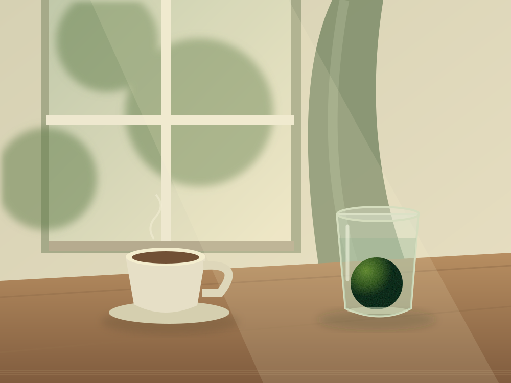

YOUR POCKET DIGITAL GARDEN
오늘의 한 컷,
초록이 되는 순간.
좋아하는 장면을 담아요.
당신의 작은 순간을 먹고 마리모가 자라요.
✳
collect moments,
grow a little friend.
01 / THE CAMERA2006년의 기분으로
SCOO DIGITAL

AUTOϟ OFF ▰
지금은 샘플 장면이에요
WARM CCD
SCOO mini
DIGITAL CAMERA
8.0 MEGA PIXELS
•••••
•••••
DISP.
•••••
8.0 MEGA PIXELS
OPTICAL ZOOM 1.0×DESIGNED FOR YOUR EVERYDAY
셔터를 눌러 첫 번째 순간을 선물해 보세요.
03 / LITTLE MOMENTS
초록을 키운 사진들00
your everyday, a little greener.